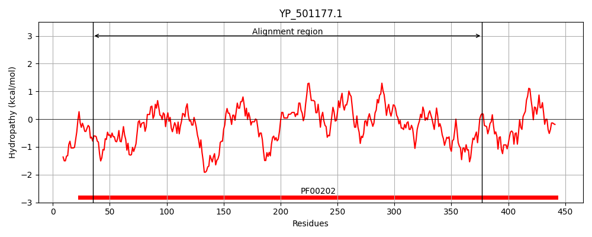
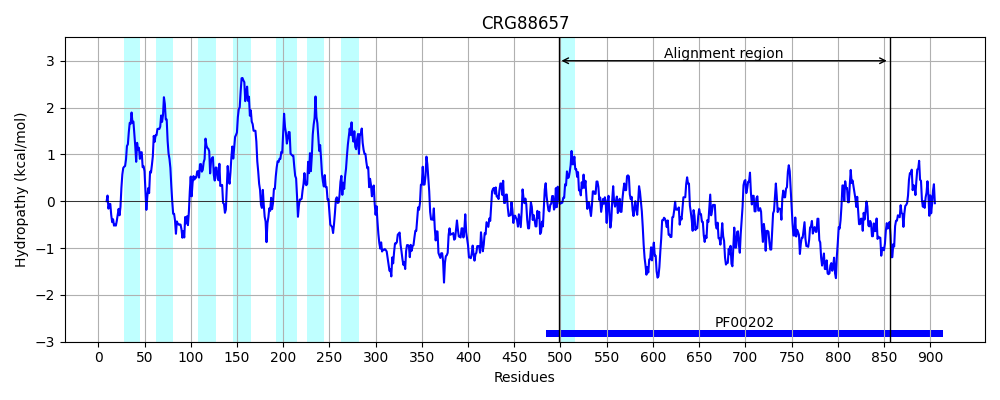
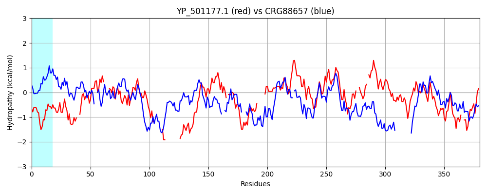

Hit Accession: CRG88657
Hit TCID: 9.B.313.1.2
Hit Description: gnl|BL_ORD_ID|2913 gnl|TC-DB|CRG88657|9.B.313.1.2 4-aminobutyrate aminotransferase / (S)-3-amino-2-methylpropionate transaminase [Talaromyces islandicus]
Mach Len: 380
e:0.000000
Query TMS Count : 0
Hit TMS Count: 8
TMS-Overlap Score: 0.000000
Predicted Substrates:None
BLAST Alignment:
Score: 208 , Bit scores: 84 bits, E-value: 1.9e-17, Alignment length: 380, Percentage identity: 26
Query: 35 KGKGSYLYDTNGNKYLDGYASLWVNVHGHNNKYLNKVIK--KQLNKIAHSTLLGSSNIPSIE----LAEKLIEITPSNLRKVFYSDTGSASVEIAIKMAYQYWK-------NID------------REKYAKKNKFITLNHGYHGDTIGAVSVGGIKTFHKIFKDL-IFENIQVESPSFYRSNYDTENEMMT------AILTNIEQILIERNDEIAGFILEPLIQGATGLFVHPKGFLKEVEKLCKKYDVLLICDEVAVGFGRTGKMFACNHEDVQ--PDIMCLG-KAITGGYLPLAATLTSKKIYNAFLSDSHGVNTFFHGHTYTGNQIVCTVALENIRLYEKRKLLSHIETTSSTLEKQLHAL--KRHRNVGDVRGRG 377
K G+YL D +GN LD YA + G+NN +L + + + + LG N PS + L L+ P L +VF + GS + E A K A+ Y + N+D + + ++ +HG G++S K HK+ D+ F+ Q P+ Y E + L E+I+ E ++ +A ++EP IQ G F + + + K+ +VL I DEV G G TGK +A +H ++Q PD++ KA T GY L K Y F +T+ G+ + + E + L+ + T L L +L K + + ++RG+G
Sbjct: 498 KSVGNYLVDLDGNVLLDVYAQIASIPVGYNNPHLAAAVNTPEMVRALIDRPALG--NFPSADWSNILKTGLLRAAPKGLNQVFTALAGSDANETAYKAAFMYRRQQERGGANVDFSDADTTSAMLNQSPGSPNMSIMSFKSAFHGRLFGSLSTTRSKPIHKL--DIPAFDWPQAPFPAL---KYPLEEHVQENAAEEKRCLAEAERIIKEFHNPVAAVVVEP-IQSEGGDNHASPAFFQGLRDITKRNNVLFIVDEVQTGVGATGKFWAHDHWNLQSPPDLVTFSKKAQTAGYYYGNPALRPNKPYRQF-------------NTWMGDPARAILFRAILEEIESKGLVENTAATGDYLYNGLESLAQKYPQAIQNLRGKG 856 | Protein Hydropathy Plots: |
|---|
|  |  |
Pairwise Alignment-Hydropathy Plot:
|
|---|
|  |